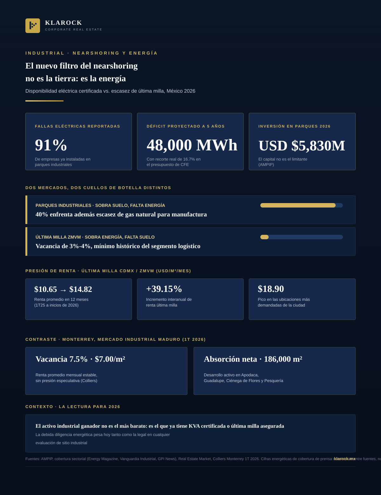

Industrial · 2026-08-29
La AMPIP proyecta USD $5,830 millones en nuevos parques industriales para 2026: el capital no es el problema. Lo que frena proyectos es otra pregunta —91% de las empresas ya instaladas reporta fallas en el suministro eléctrico. En última milla, el cuello de botella es el inverso: sobra energía, falta suelo.

Durante los últimos tres años, la conversación sobre nearshoring en México giró casi por completo en torno a la tierra: ¿dónde hay parques industriales?, ¿qué tan cerca está la frontera?, ¿cuál es el precio por metro cuadrado? Esa conversación ya está desactualizada. La Asociación Mexicana de Parques Industriales Privados (AMPIP) proyecta USD $5,830 millones en nuevos parques industriales solo para este año —el capital sobra. Lo que sí frena proyectos es una pregunta que antes era trámite de rutina: ¿hay capacidad eléctrica certificada para operar?
El resultado práctico: la pregunta que abre cualquier evaluación de sitio dejó de ser “¿cuánto cuesta el terreno?” para convertirse en “¿tiene interconexión certificada, o el proyecto entra a una lista de espera de CFE de 18 a 24 meses?”
Los mercados con pipeline de desarrollo más moderado y planeación de infraestructura más madura —como Monterrey— están absorbiendo la demanda de forma ordenada, sin el sobrecalentamiento que se observa en otros corredores.
El nearshoring sigue teniendo tierra, capital y demanda de sobra. Lo que separa un proyecto que avanza de uno atrapado en trámites es si ya resolvió su acceso a energía —o, en última milla, si ya aseguró el metro cuadrado antes de que la vacancia lo vuelva inalcanzable.
En Klarock evaluamos cada oportunidad industrial —nave, CEDIS o terreno— partiendo de ese filtro: infraestructura energética verificada y posición estratégica frente a la demanda real del mercado.
Escríbenos y un socio director te contactará en menos de 24 horas hábiles.
Contactar a un Socio Director